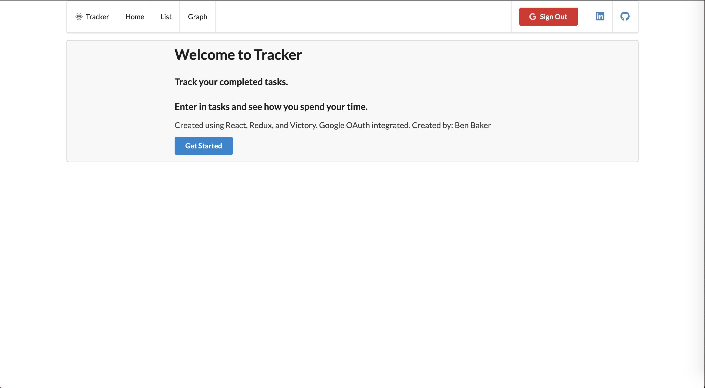
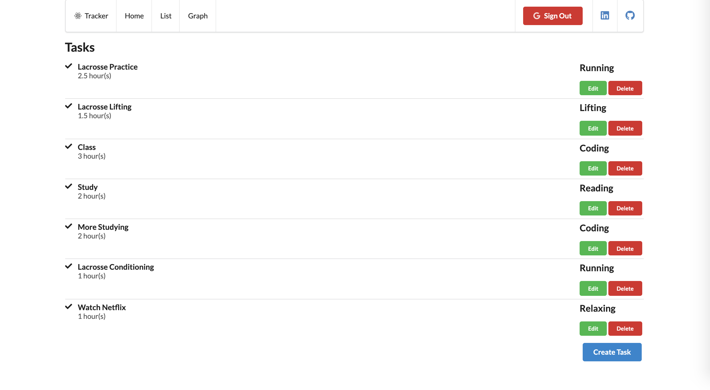
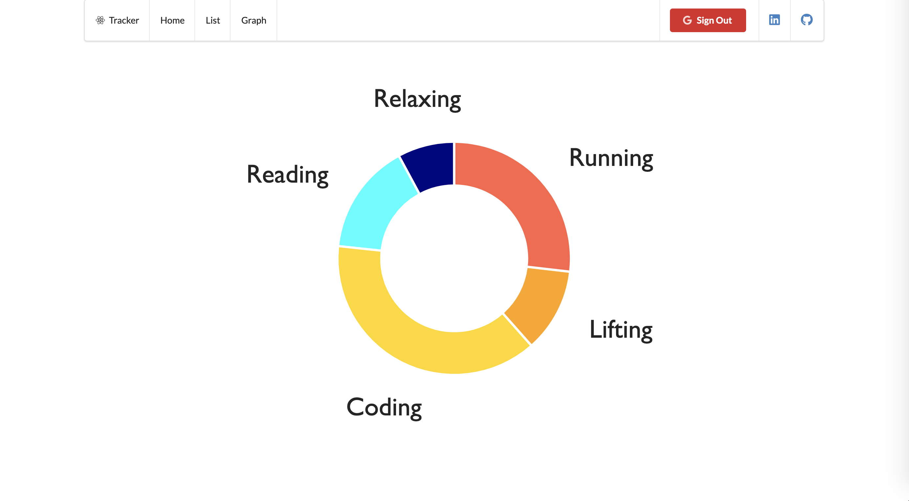

I created this web application with React, Redux, and Victory to do more than a standard to-do list.
Using Google OAuth to handle users and a JSON server API as my backend, if a user has a Google account they can sign up and their tasks will be stored in a (temporary) database. The user is required to give a description, the duration, and the category of the task.
After inputting any number of completed tasks, the user can view a visualization of how much time they spend on each category of tasks.
